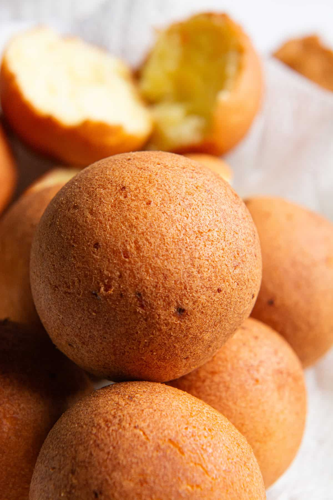
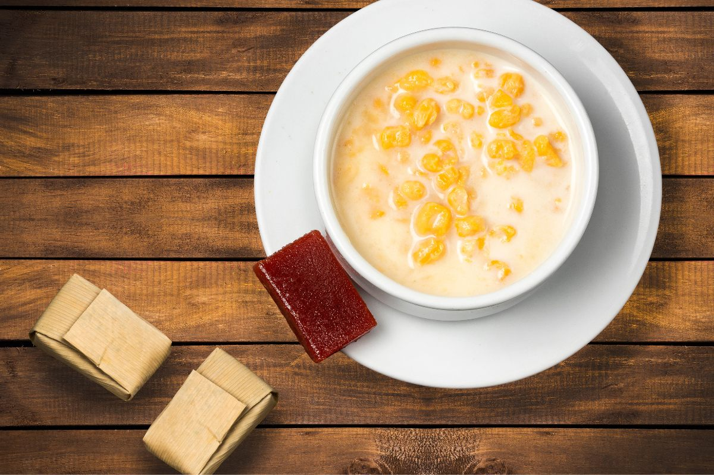
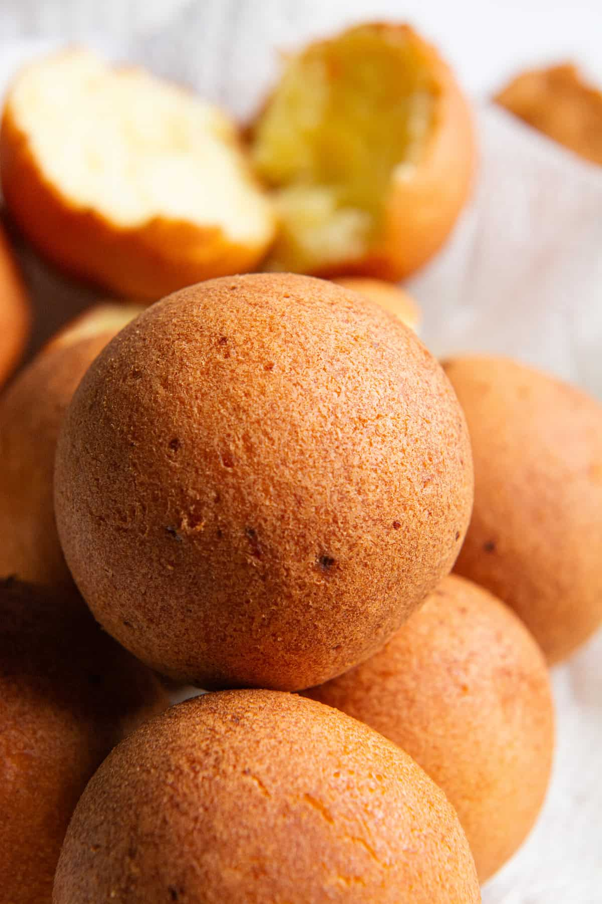
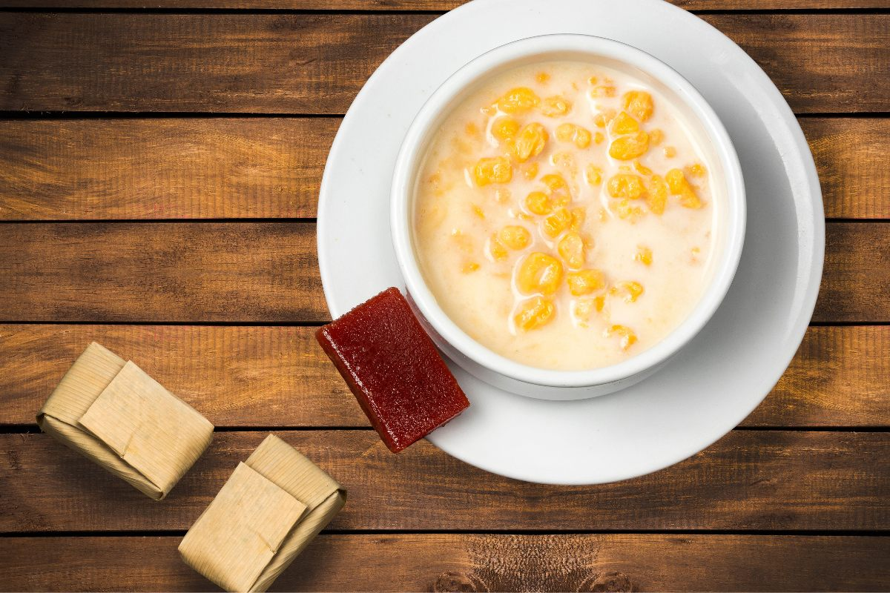

Economía diversificada con industria manufacturera, comercio y servicios empresariales, construcción, TIC y turismo. También destacan actividades agropecuarias (café, flores, ganadería) y minería a menor escala.
| Indicador | Valor |
|---|---|
| Población (2024, aprox.) | 6.903.721 hab. |
| Capital | Medellín |
| Región | Andina |
| PIB 2023 (preliminar) | $231.052 miles de millones COP |
| Principales sectores | Industria, servicios, comercio, construcción, agro |